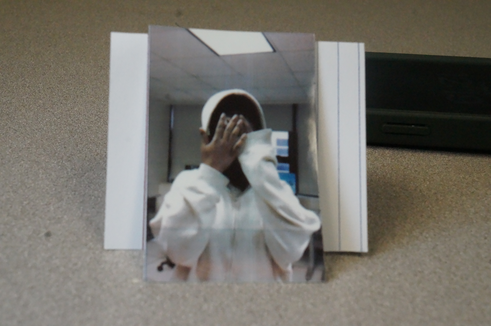
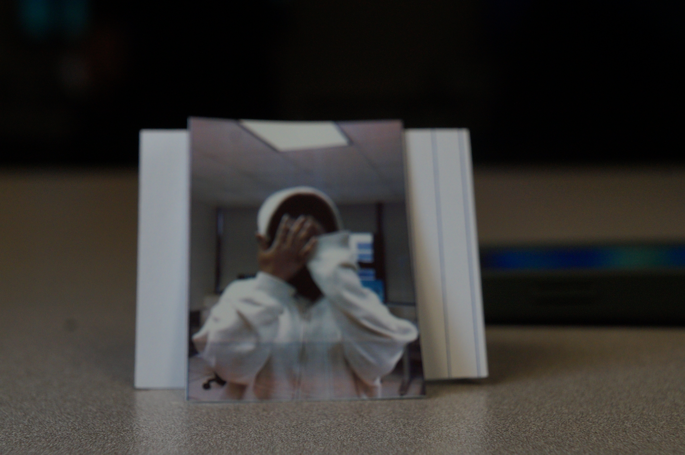

Image 1: Shallow DoF + Tonal

Image 2: Deep DoF + Tonal

Image 3: Artificial Blur using Deep DoF (Camera Raw Filter)

Overall, I enjoyed this practice because I’ve never used a camera before. While I feel like this project was a little unsuccessful for me because my camera was having a few problems focusing, I did enjoy getting experience using a camera and playing with its features. We first explored the camera and toggled its adjustments, exposures, and etc. I took pictures of many things around the classroom and I got to see how a DSL camera differs from an IPhone camera, which is what I am used to. We then had photos taken of ourselves and implemented the steps by taking deep and shallow photos. I kind of struggled with that part of the project because my camera was having trouble focusing and I felt like some of my “deep” photos were somewhat blurry, but it was also my first time doing this and I know over the course of this semester, I will get better at handling a DSR camera. My favorite part of the project was using Adobe Photoshop. When I was younger, I used a lot of editing apps like PicsArt, Befunky to do some of the same things I did for this project. So it was really interesting coming back to that and using this project to also kind of play with the Adobe settings and really see its possibilities. I can also see how this project is helpful for more creative decisions later on.
Back to Home